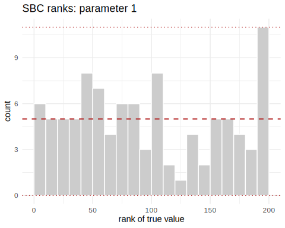
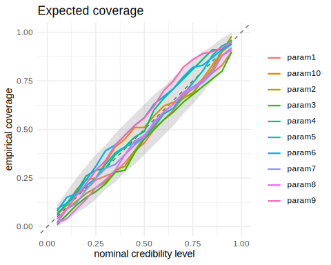
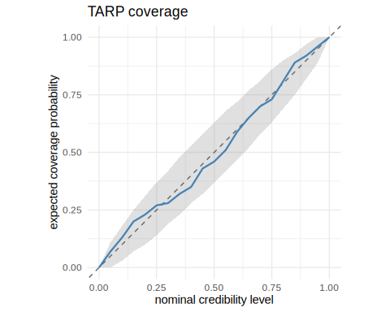
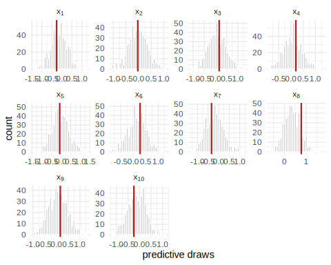

An NPE posterior is an approximation, and a bad approximation gives you no warning. It still returns draws, means and credible intervals; they are just wrong. So checking the fit is part of the workflow rather than an extra. This article walks through the package’s diagnostics in the order we use them.
We use the linear-Gaussian benchmark task throughout, because it has an analytic posterior we can compare against at the end.
library(neuralsbi)
#>
#> Attaching package: 'neuralsbi'
#> The following object is masked from 'package:base':
#>
#> sample
task <- task_gaussian_linear()
task
#> <nsbi_task> gaussian_linear: 10 parameters -> 10 data dims (analytic reference available)
fit <- npe(task$prior, task$simulator, n_simulations = 3000,
density_estimator = "linear_gaussian", seed = 1)Simulation-based calibration
Simulation-based calibration (SBC) checks the posterior on average over the prior, and it needs no reference posterior to compare against. Draw from the prior, simulate from it, then rank that known among posterior draws given . A calibrated posterior puts the truth anywhere in the ranking with equal probability, so the ranks come out uniform.
res <- sbc(fit, task$simulator, n_sbc = 100, n_posterior_samples = 200,
seed = 2)
res
#> <nsbi_sbc> 100 trials, 200 posterior samples each
#> per-parameter uniformity p-values (large = calibrated):
#> 0.326 0.246 0.003 0.284 0.902 0.419 0.868 0.522 0.083 0.657
plot_sbc(res, param = 1)
plot of chunk unnamed-chunk-3
Read the rank histogram like this:
- Flat: calibrated.
- U-shaped: the posterior is too narrow, so it is overconfident. This is the common failure, and more simulations or longer training usually fix it.
- Hump-shaped: too wide, so it is underconfident.
- Sloped: biased in one direction.
Expected coverage
The same ranks give a coverage curve. How often does the % credible interval actually contain the truth?
expected_coverage(res)
#> nominal param1 param2 param3 param4 param5 param6 param7 param8 param9
#> 1 0.05 0.06 0.02 0.01 0.06 0.09 0.08 0.02 0.02 0.04
#> 2 0.10 0.11 0.09 0.06 0.12 0.12 0.15 0.09 0.04 0.09
#> 3 0.15 0.17 0.13 0.11 0.18 0.16 0.17 0.12 0.09 0.16
#> 4 0.20 0.19 0.17 0.15 0.26 0.21 0.24 0.19 0.14 0.22
#> 5 0.25 0.24 0.20 0.18 0.29 0.25 0.31 0.25 0.20 0.29
#> 6 0.30 0.26 0.23 0.22 0.30 0.32 0.39 0.30 0.24 0.34
#> 7 0.35 0.28 0.29 0.28 0.37 0.38 0.42 0.32 0.29 0.42
#> 8 0.40 0.33 0.31 0.29 0.41 0.41 0.47 0.37 0.37 0.47
#> 9 0.45 0.39 0.39 0.38 0.46 0.43 0.52 0.42 0.44 0.52
#> 10 0.50 0.43 0.46 0.45 0.49 0.46 0.56 0.46 0.47 0.56
#> 11 0.55 0.50 0.51 0.50 0.60 0.52 0.63 0.54 0.53 0.62
#> 12 0.60 0.55 0.58 0.55 0.66 0.58 0.67 0.59 0.59 0.70
#> 13 0.65 0.60 0.61 0.59 0.71 0.61 0.71 0.63 0.63 0.75
#> 14 0.70 0.67 0.66 0.64 0.76 0.68 0.77 0.68 0.69 0.82
#> 15 0.75 0.68 0.69 0.68 0.81 0.74 0.82 0.71 0.72 0.86
#> 16 0.80 0.76 0.75 0.72 0.86 0.80 0.83 0.74 0.75 0.89
#> 17 0.85 0.79 0.81 0.76 0.91 0.88 0.87 0.79 0.80 0.90
#> 18 0.90 0.83 0.90 0.80 0.91 0.93 0.91 0.88 0.88 0.92
#> 19 0.95 0.90 0.98 0.90 0.96 0.95 0.94 0.92 0.91 0.95
#> param10
#> 1 0.07
#> 2 0.11
#> 3 0.19
#> 4 0.24
#> 5 0.25
#> 6 0.33
#> 7 0.41
#> 8 0.45
#> 9 0.51
#> 10 0.51
#> 11 0.57
#> 12 0.62
#> 13 0.64
#> 14 0.67
#> 15 0.71
#> 16 0.76
#> 17 0.83
#> 18 0.90
#> 19 0.94
plot_coverage(res)
plot of chunk unnamed-chunk-4
A calibrated posterior hugs the diagonal. Points below it mean the intervals are too narrow: a 90% interval that covers the truth 70% of the time.
TARP, a sharper coverage test
SBC looks at each parameter’s marginal one at a time. TARP (Lemos et al., 2023) tests coverage of the joint posterior using random reference points, so it can catch miscalibration that per-parameter ranks miss.
tr <- tarp(fit, task$simulator, n_tarp = 100, n_posterior_samples = 200,
seed = 3)
tr
#> <nsbi_tarp> 100 trials, 200 posterior samples each
#> max |ECP - nominal|: 0.050 (0 = perfectly calibrated)
#> plot with plot_tarp()
plot_tarp(tr) # ECP curve on the diagonal = calibrated
plot of chunk unnamed-chunk-5
Posterior predictive checks
Calibration is an average over many simulated data sets. A predictive check asks about the observation you actually have. Push posterior draws back through the simulator and see whether the observed data look typical of what comes out.
theta_true <- sample_prior(task$prior, 1)
x_obs <- task$simulator(drop(theta_true))
post <- posterior(fit, x_obs = x_obs)
pred <- posterior_predictive(post, task$simulator, n = 500)
plot_posterior_predictive(pred, x_obs)
plot of chunk unnamed-chunk-6
If the observation falls in the tails of the predictive distribution, either the fit is poor for this or the simulator cannot reproduce the data at any parameter value. The second is model misspecification, and no calibration check will tell you about it.
Comparing against a reference posterior
When a reference posterior exists, whether analytic, from MCMC, or from a long-run fit you trust, a classifier two-sample test gives you one number. A classifier that cannot tell estimated draws from reference draws scores near 0.5, and that means the posteriors match.
draws <- sample(post, 5000)
reference <- task$reference_posterior(x_obs, n = 5000)
c2st(draws, reference)$accuracy # ~0.5: indistinguishable from the exact posterior
#> [1] 0.5386As a rule of thumb, accuracies below about 0.55 to 0.6 indicate a close match, and values near 1.0 mean the estimated posterior is badly off.
The routine we suggest
- Run
sbc()after every fit and look atplot_sbc()andplot_coverage(). It is cheap next to training and it catches overconfidence early. - Run a posterior predictive check for the actual observation before drawing any conclusion from the posterior.
- When you change estimator or training settings, compare old and new
draws with
c2st()to see whether the change moved the posterior at all.
vignette("sir-epidemic") runs this routine end to end on
an applied problem.